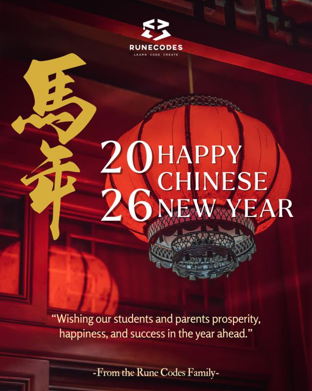

01 / VISUALS
Rune Codes Academy — Chinese New Year Greeting
2026 Chinese New Year social media poster
A festive greeting poster created for Rune Codes Academy, combining a red lantern, Year of the Horse lettering, and a seasonal message for students and parents.